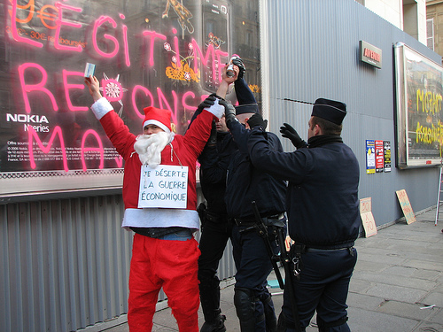

| |
Site dédié à la publication d'informations communiquées par le Collectif des déboulonneurs. En aucun cas ce site n'appelle à des actions illégales. | |
 |
||
|
Accueil du site > Paris > 23 décembre 2006 : Le Père Noël interpellé rue de Rivoli
9 janvier 2007, 14h00 : Conférence de presse, Paris, Mairie du 2è Trois membres du Collectif des déboulonneurs, dont le Père Noël en personne, ont été interpellés à Paris samedi dernier 23 décembre, rue de Rivoli, à quelques pas de l’Hôtel de ville (croisement de la rue Cloche Perce, 4è arrondt.). Ils venaient d’inscrire des slogans antipublicitaires sur 3 panneaux déroulants de l’afficheur Avenir-JCDecaux, en présence d’environ 80 sympathisants (dont une trentaine de policiers en uniforme), et de plusieurs journalistes et photographes.
Le Collectif des déboulonneurs organise chaque fin de mois des actions non-violentes de désobéissance civile, en dégradant des panneaux d’affichage de 4x3m avec de la peinture. Objectif : obtenir un débat public sur la pollution de l’espace public par l’affichage publicitaire. Ces actions se déroulent simultanément dans plusieurs villes de France. 
Procès à Paris le 12 janvier 2007 Pour avoir inscrit des slogans antipublicitaires sur des panneaux de 4x3m, à visage découvert et en présence de 80 sympathisants, le 28 octobre dernier devant la gare d’Austerlitz, sept membres du Collectif des déboulonneurs de Paris comparaîtront devant la 29ème chambre du Tribunal correctionnel de Paris, le vendredi 12 janvier 2007 à 9h00. Ils encourent 75 000 euros d’amende et cinq ans de prison. Ce sera le second procès de membres du Collectif, après celui de Montpellier en juin dernier. Cette échéance n’entame en rien notre détermination, bien au contraire ! Les procès publics sont, pour les Déboulonneurs, l’occasion de placer le système publicitaire sur le banc des accusés. Une conférence de presse est programmée pour le mardi 9 janvier à 14 heures, à la Mairie du 2è arrondissement de Paris. A l’heure où plusieurs villes dans le monde s’engagent vers la suppression de leur panneaux publicitaires (Sao Paulo, Kyoto), nous estimons que nos revendications n’ont jamais été autant d’actualité. Nous demandons :
Contact presse : Céline 06 13 53 80 77 - Nicolas 06 62 60 06 12 deboulonneurs.paris[a]no-log.org Par mail (remplacer [a] par @ dans chaque adresse) Photo jointe extraite du site : http://www.flickr.com/photos/tofz4u/330836082/ Une vidéo de Dadaprod sur cette action Quelques dessins (photos retouchées par ordinateur) de l’action |
{kind=link}
|
Site utilisant SPIP - Hébergement Ouvaton
|